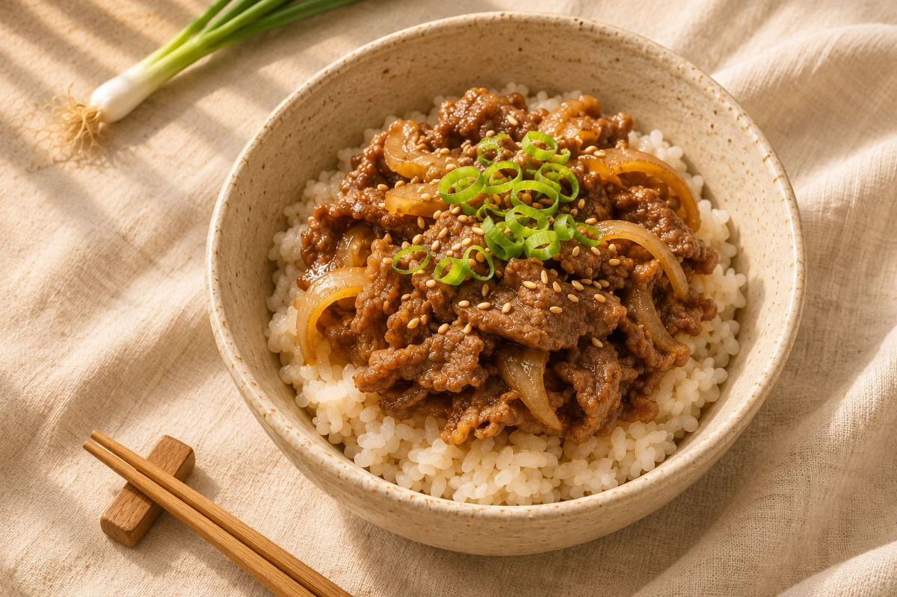

K1 RECIPE 01
불고기
덮밥
따끈한 밥 위에 얹는 달콤 짭짤한 불고기. K1 스틱의 QR을 찍으면 이런 화면이 열려요.
제품 배합이 확정되기 전의 레시피 시연입니다. 조리 시간과 분량은 예시입니다.

01 / INGREDIENTS
준비 재료
준비한 재료를 체크하세요.
구하기 쉬운 대체 재료
불고기용 고기 대신 얇게 썬 소고기를, 쪽파 대신 대파를 사용해 보세요. 백미는 현미밥으로 바꿔도 됩니다.
02 / DIRECTIONS
이렇게 만들어요
- 01양파와 고기를 준비해요.
양파는 채 썰고 고기는 먹기 좋은 크기로 준비해요.
- 02팬에서 볶다가 한 포를 넣어요.
양파와 고기를 볶고, 스틱을 넣어 섞은 뒤 고기를 충분히 익혀요. 물 양과 정확한 조리법은 정식 제품 안내를 확인해 주세요.
- 03밥 위에 얹어 마무리해요.
밥에 불고기를 얹고 쪽파를 올려 마무리해요.